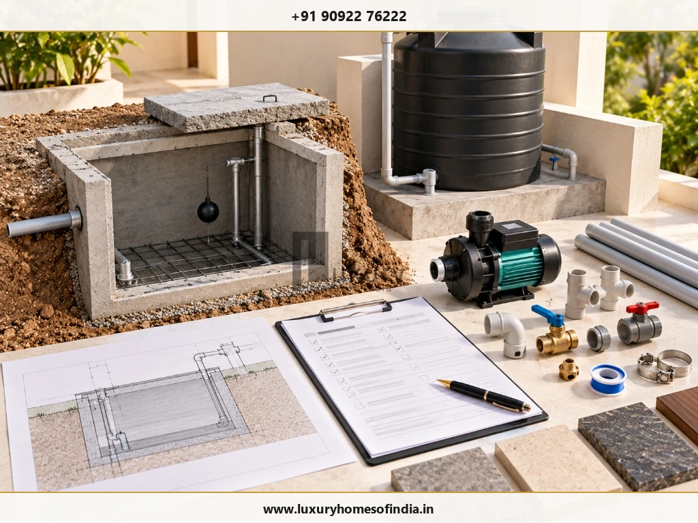
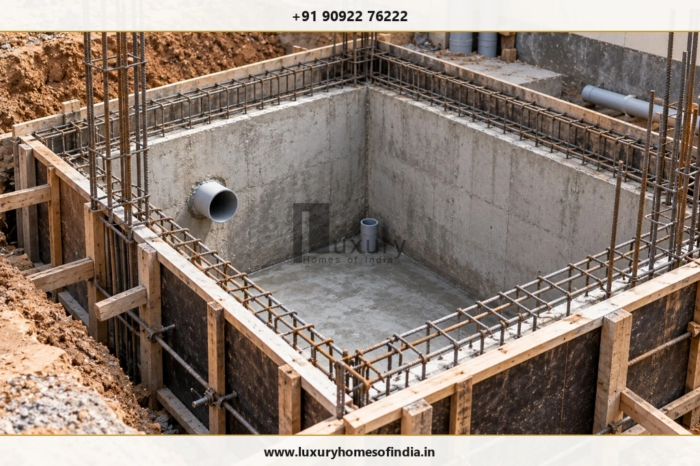
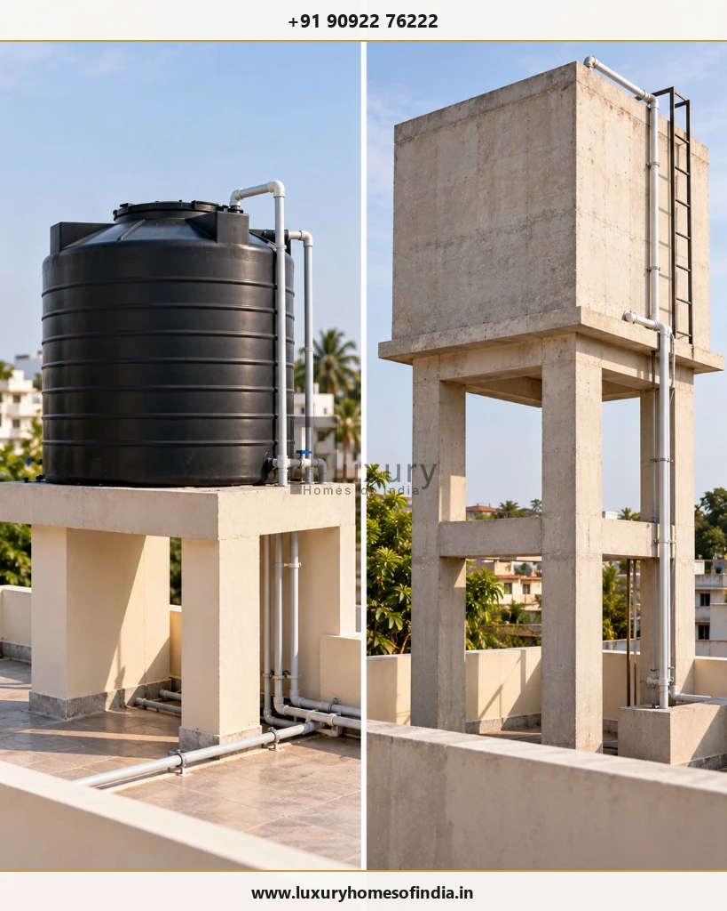

Planning the sump and overhead tank construction cost in Chennai requires more than comparing tank prices. The total budget depends on storage capacity, excavation, soil and groundwater conditions, reinforced concrete (RCC) construction, waterproofing, structural support, pumps, plumbing and installation. An underground RCC sump and a ready-made plastic overhead tank also involve different materials and labour requirements, so their costs should be assessed separately before combining them into a project estimate.

Contemporary Chennai luxury residence showcasing integrated water infrastructure: underground potable/rainwater harvesting sump beneath the driveway and concealed overhead rooftop storage.
For homeowners building an independent house or luxury villa, the most reliable approach is to establish the required storage capacity, finalise the location, specify the complete system and obtain itemised quotations. Each quotation should clarify what is included, what is excluded and whether testing, access provisions and site restoration are covered. This guide explains how to assess the cost, compare storage options and plan the work before construction begins. Actual prices must be established through current, project-specific quotations rather than assumed from capacity alone.
1. What Determines Sump and Overhead Tank Construction Cost?
The total budget is influenced by the type of storage system, its capacity and the work required to install it safely.
| Cost Component | What to Check |
|---|---|
| Underground sump | Excavation, concrete, reinforcement, shuttering and structural design |
| Waterproofing | Surface preparation, joint detailing, specified system and testing |
| Cover and access | Cover slab, access opening and loading conditions |
| Overhead tank | Tank material, capacity, product specification and installation |
| Supporting structure | Platform, staging or RCC support, where required |
| Pump and controls | Required flow, head, electrical protection and automation |
| Plumbing | Inlet, outlet, overflow, drain, valves and connections |
| Site work | Backfilling, disposal, groundwater management and restoration, where applicable |
The most useful comparison is the complete installed cost, not the price of a tank body or an isolated construction activity.
How to Compare a Contractor's Estimate
Request a written breakdown of the proposed work. Identify whether excavation, reinforcement, waterproofing, pipework, pump installation and testing are included. If two quotations cover different scopes, their totals cannot be compared fairly.

Technical itemisation model displaying the complete water storage flow: sub-grade RCC sump pit, submersible booster pump, CPVC plumbing riser, and elevated rooftop plastic storage tank with float valve.
2. Underground RCC Sump Construction Cost
An underground sump stores water at ground level or below ground level. An RCC sump is constructed as a water-retaining structure, with dimensions and reinforcement determined by the design and site conditions.
Its cost may depend on:
- Required storage capacity and internal dimensions: Dictates the volume of soil excavation, concrete volume, and total surface area requiring waterproofing.
- Excavation depth and the nature of the soil: Loose clay or coastal sand requires extra shoring and trench safety measures.
- Groundwater conditions and dewatering: High water table sites (common along Chennai's coastal belts like ECR and OMR) necessitate continuous dewatering pumps during construction.
- Concrete, reinforcement and shuttering quantities: Structural water-retaining concrete (M25/M30 grade with waterproofing admixtures) and corrosion-resistant TMT steel bars.
- Construction joints, penetrations and waterproofing details: Hydrophilic waterstops at floor-to-wall joints, elastomeric coatings, and food-grade internal linings.
- Cover slab, access opening and loading above the sump: Whether the slab must bear car driveway traffic (heavy vehicular RCC slab) or pedestrian garden traffic.
- Inlet, outlet, overflow, washout and pump connections: Core-cut sleeves, heavy-duty cast-iron or FRP airtight chamber covers.
- Backfilling and reinstatement: Proper sand/quarry-dust compaction around the tank walls to prevent external earth settlement.
Estimate the Scope Before Requesting a Price
Start with the required capacity and proposed location. Ask the contractor or design team to specify the sump dimensions, structural design basis, concrete and reinforcement requirements, waterproofing system, access arrangements and plumbing connections.

Engineering detail during sump construction: heavy dual-layer TMT reinforcement mesh, rigid formwork shuttering, and precision-sleeved PVC pipe penetrations prior to concrete casting.
3. How Much Sump Capacity Does Your House Need?
The appropriate sump capacity depends on household demand, the frequency and reliability of water supply, available space and the source of water.
Required storage ≈ daily water demand × desired supply-gap coverage
For example, the design team can estimate household demand, establish how long the stored supply should last (e.g., 3 to 5 days buffer against supply interruptions) and then check whether the proposed capacity is suitable. This is a planning method, not a substitute for a project-specific water-demand assessment.
Consider the following questions:
- How many occupants will use the property regularly?
- How much water is likely to be required each day (standard allowance is 135 to 200 litres per person per day for urban residences)?
- Is the municipal supply continuous, scheduled alternate days, or intermittent?
- Will water come from a Metro Water piped connection, private tanker delivery, on-site borewell, or multiple blended sources?
- Will the sump storage also cater to garden irrigation, landscape features, or car washing?
- Is there sufficient driveway or setback space for safe structural construction and future vacuum tanker access?
- How will the sump be accessed, ventilated, inspected and mechanically cleaned periodically?
A larger sump is not automatically the better choice. Capacity should match expected demand, supply conditions, available space and the practical requirements of the property. Excessive stagnant storage can lead to water deterioration and increased structural costs.
4. Overhead Water Tank Cost in Chennai
Overhead storage can use a ready-made plastic tank or a custom-built RCC structure. The options should be evaluated according to their total installed cost, structural requirements and maintenance needs.
Option A: Ready-Made Plastic Overhead Tank
A ready-made rotational moulded (rotomoulded) polyethylene or blow-moulded plastic tank (available in 3-layer, 4-layer, or 5-layer UV-stabilised configurations) is available in different capacities. The total installation scope includes:
- Tank body and selected product specification (UV resistance, anti-bacterial inner lining, food-grade virgin polymer).
- Suitable elevated masonry or steel supporting platform/stand to generate adequate gravity head for top-floor fixtures.
- Inlet and outlet brass/CPVC connections with robust bulkhead tank adaptors.
- Heavy-duty brass mechanical float valve and screened overflow pipe arrangement.
- Full-bore washout drain connection with an accessible gate valve for periodic flushing.
- Crane lifting, terrace placement, and plumbing installation labour.
The tank's purchase price alone does not represent the complete installation budget. Supporting platforms, valves, pipe risers, and rooftop lifting constitute a substantial portion of the total expense.
Option B: RCC Overhead Tank
An RCC overhead tank is a purpose-built water-retaining concrete structure built directly atop the terrace or head-room columns. Its cost depends on the capacity, structural design, staging height, construction access, waterproofing, plumbing and inspection provisions.

Side-by-side overhead storage comparison: a multi-layer UV-stabilised cylindrical plastic tank mounted on masonry piers (left) versus an engineered monolithic concrete elevated water tower with access ladder (right).
5. Plastic Tank vs RCC Tank: Which Is Better?
Neither option is universally preferable. The appropriate solution depends on architectural design, required capacity, structural installation conditions and maintenance expectations.
| Factor | Plastic Overhead Tank | RCC Overhead Tank |
|---|---|---|
| Installation | Usually simpler when a suitable masonry or RCC support platform is available. | Requires on-site shuttering, reinforcement tying, staging, concreting, and extended curing time. |
| Available Dimensions | Determined by standardised factory products (e.g., 500L, 1,000L, 2,000L cylindrical units). | Can be custom-designed to match building headroom dimensions and architectural aesthetics. |
| Supporting Structure | Must provide uniform flat support beneath the entire base to avoid point-load stress cracking. | Integrated directly with the home's structural columns, beams, and terrace frame. |
| Maintenance | Inspect the polymer body for UV chalking, check tank connector seals and lid threading. | Periodic inspection of concrete surfaces, construction cold joints, elastomeric waterproofing, and rebar health. |
| Cost Assessment | Include tank body, support plinth, plumbing fittings, hoisting, and installation labour. | Include formwork, reinforcement, waterproof concrete, screed plaster, food-grade waterproofing, and plumbing. |
| Construction Access | Depends on staircase width or external crane/pulley lifting arrangements to terrace level. | Depends on material hoisting (cement, sand, aggregates, water) and staging scaffolding on the roof. |
Compare like-for-like scopes. A ready-made plastic tank and an engineered RCC tank are not equivalent products, and a lower initial purchase price does not by itself establish the better long-term option for your residence.
6. Pump, Plumbing and Installation Requirements
A sump and overhead tank form part of a wider domestic water-storage and distribution network. Depending on the layout and pressure requirements, the installation may require a transfer pump, pressure booster pump, mechanical float valve, level controllers, electrical protection, isolation valves and appropriate pipework.
Before finalising your plumbing estimate, confirm the following technical requirements:
- Required pump flow rate and delivery head: Calculate the vertical lifting height from the sump bottom to the overhead tank inlet plus frictional pipe losses.
- Pressure boosting necessity: For multi-shower luxury homes, rainfall showerheads and thermostatic divertors require a separate hydro-pneumatic (PHE) booster pump system.
- Pump positioning and electrical controls: Well-ventilated, weather-sheltered pump room or submersible sump pump pit with dedicated MCB, dry-run protection, and water-level automation.
- Inlet, outlet, overflow and drain arrangements: Minimum pipe diameters (typically 1" to 1.5" delivery lines and 2" to 3" overflow/washout lines) with mosquito-proof wire mesh on termination bends.
- Valve positions and maintenance clearances: Install full-port brass/stainless-steel ball valves, non-return valves (NRVs), and union joints before and after pumps for swift servicing without draining the system.
- Contractual responsibilities: Explicitly establish whether the civil contractor, plumbing contractor, or equipment vendor is supplying, wiring, testing, and commissioning each component.
A basic water transfer arrangement should not be priced as though it includes a variable-frequency pressure-boosting system and smart IoT automation. Ask for the equipment specification and installation scope in writing.
7. Waterproofing and Leak Prevention
Waterproofing is the single most critical factor determining the durability and hygiene of an underground RCC sump and any concrete overhead water-retaining structure. Appropriate engineering and meticulous workmanship prevent two major risks: potable water leaking out into surrounding soil, and contaminated sub-soil groundwater leaking inward.
Before accepting a contractor's quotation, confirm these waterproofing parameters:
- Surfaces and joints covered: Full internal tank basin, walls up to top slab, and the underside of the cover slab to prevent vapor corrosion.
- Material specification: Cementitious elastomeric coating, crystalline waterproofing compounds, or polymer-modified waterproof cement mortar tested for potable water contact.
- Construction cold joint detailing: Continuous hydrophilic expanding swelling strips or PVC waterstops embedded at the junction between the base slab and vertical RCC walls.
- Pipe penetration sleeves: Pre-installed non-shrink grout or polyurethane elastomeric collars around inlet, suction, and overflow pipe penetrations.
- Hydrostatic ponding test: Mandatory 72-hour continuous water test filled to overflow level to observe and verify zero pressure drops before backfilling.
- Written warranty documentation: Confirm the contractor's rectification commitments in writing for 5 to 10 years against dampness or structural seepage.
Never compare contractors solely on lowest headline price when their waterproofing specifications differ. Inadequate sump waterproofing can compromise structural foundations and contaminate domestic water supplies.
9. How to Control Costs Without Compromising Quality
Controlling costs on your water-storage system does not mean cutting corners on structural integrity or waterproofing. Implement these six disciplined planning steps:
1. Finalise Capacity Early
Determine your true household storage requirements before breaking ground. Over-sizing the underground sump incurs exponential excavation, steel, and waterproofing expenses while occupying valuable setback space that could be used for landscaping or parking.
2. Coordinate Location with Building Layout
Position the underground sump close to the entrance gate for effortless Metro Water connection and private tanker delivery, while keeping adequate clearance from building column footings, compound walls, septic tanks, and sewer lines.
3. Compare Complete Quotations
Demand identical BOQ formats from every bidder. Compare structural concrete grades, reinforcement ratios, brand of waterproofing chemicals, piping materials, pump specifications, and testing clauses rather than evaluating contractors based on rough headline rates.
4. Specify Suitable Equipment
Select high-efficiency submersible or monobloc pumps sized accurately for your building’s actual static head and flow requirements. Avoid over-motoring, which increases both initial purchase price and recurring electricity consumption, but invest in reliable dry-run protection and auto-cut-off controllers.
5. Provide for Cleaning and Inspection
Incorporate adequate manhole access (minimum 600 × 600 mm), a low-point sump washout sump-pit, and proper cross-ventilation so maintenance crews can inspect, desilt, and disinfect the tanks safely without structural modifications.
6. Do Not Compromise Structural Safety
Never reduce reinforcement bars, switch to sub-grade masonry, eliminate concrete plinth beams, or place unverified heavy overhead tanks on rooftop slabs without written structural engineering consent.
10. Sump and Overhead Tank Quotation Checklist
Before issuing an advance payment or executing a contractor agreement, verify that every item below is explicitly specified in the contract documents:
- Required capacities: Exact net usable volume defined in litres for both underground sump and overhead tank.
- Sump structural drawings: Internal length, width, clear depth, wall thickness, and rebar bar-bending schedule (BBS).
- Excavation & earthwork: Depth of trench, shoring allowance, carting away debris, and dewatering protocol.
- Material grades: Cement brand/type (OPC/PPC), aggregate grading, M20/M25/M30 concrete mix, and Fe550D TMT reinforcement.
- Waterproofing specifications: Chemical brand, application coats, construction joint waterstops, and 72-hour ponding test.
- Cover slab details: Thickness, reinforcement layout, manhole frame, and traffic loading rating (pedestrian vs vehicular).
- Piping penetrations: Core-cut sleeve dimensions, non-shrink grouting, puddle flanges, and wall seals.
- Overhead tank specifications: Brand, number of polymer layers, UV rating, or RCC structural staging drawings.
- Supporting arrangement: Terrace load distribution beams, masonry plinth height, or structural steel tower.
- Pump & motor equipment: Brand, power rating (HP/kW), head capacity, float switches, and starter control panel.
- Valves & fittings: Heavy-duty brass ball valves, dual non-return valves, strainers, and union couplers.
- Backfilling & restoration: Graded backfilling, compaction around sump, and driveway/landscape paving reinstatement.
- Commercial terms: GST inclusion, transport/unloading freight, and variation pricing procedure for unexpected soil conditions.
- Payment milestones: Clear stage-wise milestones tied to excavation, RCC casting, waterproofing test pass, and final handover.
A comprehensive, written scope protects homeowners from unexpected cost escalations and ensures trouble-free water storage for decades.
Frequently Asked Questions
Conclusion: Plan the Complete System Before Construction
Sump and overhead tank construction cost in Chennai depends on the required capacity, structural design, site conditions, waterproofing, equipment and installation scope. An underground RCC sump requires more than excavation and concrete, while an overhead tank may also need suitable structural support, fittings, pumps and controls.
The best starting point is to establish the water-storage requirement, finalise the layout, specify the complete system and obtain itemised quotations. Homeowners should also have structural and water-retaining details reviewed by appropriately qualified professionals.
Planning a Residential Project in Chennai?
Visit Luxury Homes of India to explore our custom residential construction practices. You can also review our comprehensive civil engineering and construction services, browse our portfolio in the LHI project gallery, or contact our engineering team directly to discuss your project requirements.
Direct Engineering Line: +91 90922 76222 | Email: info@luxuryhomesofindia.in
Design Studio: #85, 4th Floor, Lotus Tower, Guindy, Chennai – 600032